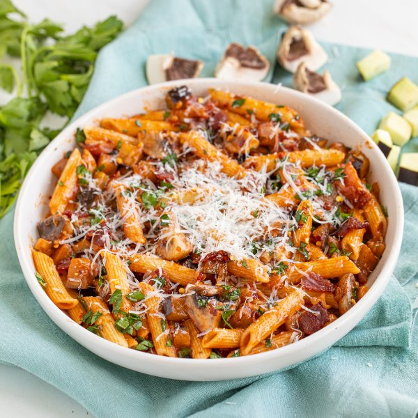

Spicy Bacon, Eggplant & Mushroom Pasta (Amatriciana) with Parsley

Total Time
35 min
Nutrition (Per Serving)
677.1 kcalCalories
28.1 gProtein
81.8 gCarbs
28.2 gFat
Full nutrition table
| Calories | 677.1 kcal |
| Total fat | 28.2 g |
| Saturated fat | 10.2 g |
| Trans fat | 0.2 g |
| Cholesterol | 46.6 mg |
| Sodium | 406.6 mg |
| Carbohydrates | 81.8 g |
| Fiber | 15.2 g |
| Sugars | 15.3 g |
| Protein | 28.1 g |
| Potassium | 1560.2 mg |
| Calcium | 92.7 mg |
| Iron | 5.8 mg |
| Vitamin A | 680.5 IU |
| Vitamin C | 37.5 mg |
| Vitamin D | 15.6 IU |
Cookware
Ingredients
- 8 slicesbacon
- 2eggplants
- 4 clovesgarlic
- 1 small bunchItalian (flat-leaf) parsley
- 2 ozParmesan cheese
- 10 ozpenne pasta
- ½ mediumred onion
- 2 (8 oz) canstomato sauce
- ½ lbwhite mushrooms
- black pepper
- crushed red pepper
- salt
Steps
- Fill a large pot halfway with hot water (from the tap), cover, and bring to a boil. Uncover, add salt and pasta, and stir for a few seconds. Cook until desired firmness, 8-10 minutes.1 tsp salt
10 oz penne pasta - Meanwhile, wash and dry the fresh produce.2 eggplants
½ lb white mushrooms
1 small bunch Italian (flat-leaf) parsley - Trim and small dice eggplants; quarter mushrooms. Transfer both to a medium bowl and set aside.
- Small dice bacon.8 slices bacon
- Preheat another large pot over medium-high heat.
- Once the pot is hot, add the bacon and cook, stirring occasionally, until crispy, 5-6 minutes. Using a slotted spoon, transfer bacon to a paper towel-lined plate, leaving the drippings in the pot.
- While the bacon cooks, using a clean cutting board, peel and mince onion and garlic.½ medium red onion
4 cloves garlic - Return the pot (with bacon drippings) to medium heat. Once the pot is hot, add eggplant, mushrooms, onion, garlic, and salt; cook, stirring occasionally, until eggplant and mushrooms are soft and golden, 8-10 minutes.½ tsp salt
- When the pasta is done, drain in a colander and return to the pot; cover and set aside.
- Shave parsley leaves off the stems; discard stems and mince the leaves.
- Finely grate Parmesan.2 oz Parmesan cheese
- When the veggies are done, add tomato sauce and spices to pot. Stir to combine the veggie sauce and bring to a simmer; cook, stirring occasionally, until warmed through, about 3 minutes.2 (8 oz) cans tomato sauce
½ tsp salt
½ tsp black pepper
½ tsp crushed red pepper - Add veggie sauce, bacon, and half of the parsley (reserving the rest for garnish) to the pot with the pasta; stir to combine.
- To serve, divide pasta between plates or bowls; top with reserved parsley, additional crushed red pepper, and Parmesan. Enjoy!½ tsp crushed red pepper